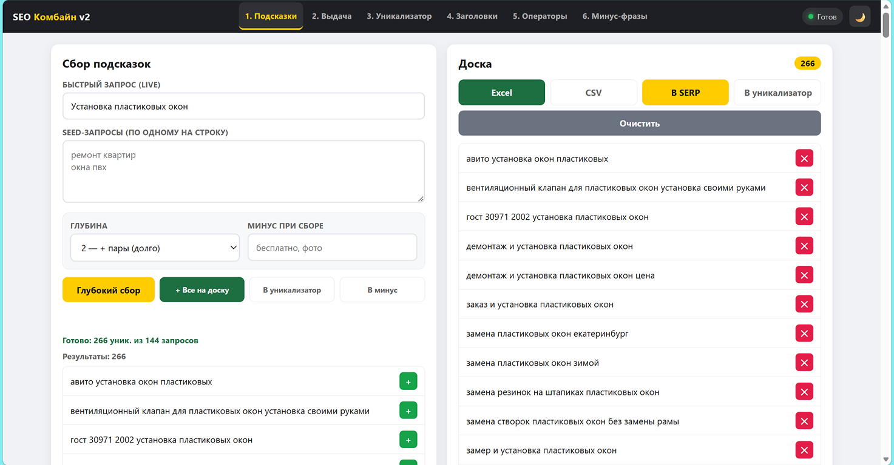

Гипербыстрый сбор семантики, рекламных кампаний и минус‑фраз. Работает в браузере — без установки.
Инструмент, который экономит часы ручной работы — особенно в конкурентных нишах: мебель на заказ, автомойки, ремонт, услуги и т.д.
Соберите семантику, минус‑фразы и заголовки за минуты — без копипаста и непредсказуемого ИИ.
Подготовьте рекламные кампании под свою нишу: кухни, столы, автомойки — всё под контролем.
Парсинг выдачи, подсказки, очистка дублей — полный цикл подготовки семантического ядра в одном окне.
Ниже — примеры, где SEO Комбайн закрывает рутину и снижает стоимость лида. Особенно актуально для конкурентных ниш с дорогим кликом.
Для бренда «Арборика» и аналогичных проектов: собираем семантику по запросам «письменный стол из дерева», «стол на заказ Рязань», «столы из керамогранита». Генерируем минус‑фразы (например, «б/у», «чертёж», «своими руками»), чтобы не тратить бюджет на нецелевые клики. Результат — чистые кампании с низкой стоимостью лида.
Быстрый запуск рекламных кампаний: парсим выдачу по гео «Рязань», «Москва», «СПб», собираем промо‑объявления конкурентов, формируем свои заголовки и минус‑фразы. Это критично при продаже комплектов оборудования «Быстрый запуск» — чтобы объявления попадали именно в целевую аудиторию.
Семантика по материалам и ценовым сегментам: «кухня из массива», «кухня эконом», «кухня с фасадами МДФ». Уникализатор убирает дубли, операторы приводят фразы к формату Директа. Итог — готовые списки для быстрой настройки и масштабирования.
Ниши с высокой конкуренцией: дома из бруса, остекление балконов, натяжные потолки, душевые перегородки. SEO Комбайн позволяет быстро собрать ядро, убрать мусор и запустить кампании без ручной обработки тысяч фраз.
Всё происходит в браузере: от загрузки списка запросов до выгрузки готового файла.
Вставляете список ключевых фраз или один запрос — сразу задаёте регион (например, Рязань, Москва) и глубину сбора.
Система собирает подсказки, выдачу (включая промо‑объявления), формирует списки минус‑фраз и убирает дубли — всё в одном окне.
Создаёте шаблоны заголовков, применяете операторы Директа, задаёте лимиты по символам — получаете готовые варианты для объявлений.
Выгружаете результат в CSV/Excel, загружаете в Директ или передаёте подрядчику. Всё готово к запуску за считанные минуты.
Каждая функция — отдельный понятный блок. Всё работает в браузере, без установки и сложной настройки. Ниже — примеры интерфейса.
По одному запросу или списку запросов соберите поисковые подсказки Яндекса. Настройте глубину сбора и гео — получите максимально релевантные варианты для вашей ниши (мебель, автомойки, услуги и др.).

Спарсите выдачу по запросу и гео: получите ссылки, заголовки и описания — отдельно для промо и органической выдачи. Это поможет анализировать конкурентов и формировать объявления. Особенно полезно для ниш с плотной конкуренцией: мебель на заказ, автомойки, столешницы из керамогранита.
Объединяйте списки фраз для SEO или контекста и одной кнопкой убирайте дубли — как по вертикали, так и по горизонтали среди всех списков. Чистые данные без ручной проверки. Важно для масштабирования кампаний в нишах мебели, ремонта, строительства.
Создайте шаблон, добавьте ключевые фразы и слова, задайте количество символов — и сгенерируйте заголовки. Полный контроль над содержанием, без непредсказуемости ИИ и копипаста. Идеально для точных офферов: «кухни на заказ», «столы из дерева», «автомойка под ключ».
Превратите список фраз в готовые запросы с операторами Яндекс Директа. Выберите нужный оператор, примените к списку — и получите результат для быстрой настройки кампаний. Критично для дорогих ниш: мебель, автомойки, строительство домов из бруса.
Используйте списки «ядро» и «подсказки», добавьте свой список минус‑фраз, задайте минимальную длину и запустите очистку. Получите готовый список минус‑слов для точной настройки кампаний — чтобы не тратить бюджет на нецелевые запросы (например, «бесплатно», «б/у», «своими руками» в нише мебели или автомоек).
Инструмент, который закрывает рутину в настройке рекламы и SEO — без лишних сервисов и лишних трат.
Сбор семантики и подготовка кампаний — за минуты, а не за часы. Особенно ценно, когда нужно быстро запустить рекламу для сезонных ниш (автомойки, остекление, ремонт).
Никаких установок, обновлений и зависимостей. Открыли — собрали — выгрузили. Удобно, если работаете с разных устройств или в команде.
Никакой «магии ИИ»: вы сами задаёте шаблоны, операторы и логику. Это критично для дорогих ниш (мебель на заказ, кухни, столы из керамогранита), где каждый клик стоит дорого.
Подходит для любых ниш: от мебели и автомоек до строительства и услуг. Один инструмент закрывает задачи контекстолога, маркетолога и SEO‑специалиста.
Меньше ручного труда, меньше ошибок, меньше нецелевых кликов. В конкурентных нишах это напрямую снижает стоимость лида.
Результаты сразу в CSV/Excel: списки ключей, минус‑фразы, заголовки — всё в готовых колонках под Директ. Можно открыть в таблице, быстро проверить и сразу загрузить в кабинет.
Данные обрабатываются в браузере, не улетают на сторонние серверы. Подходит для чувствительных ниш (услуги, B2B, локальные проекты) — без лишних рисков и утечек.
Выберите подходящий формат — и запускайте кампании уже сегодня.
Для небольших проектов и разовых запусков: сбор семантики, подсказки, уникализация, операторы, выгрузка в CSV.
Всё из Базового + расширенный парсинг выдачи, сбор промо‑объявлений, шаблоны заголовков, приоритетная техподдержка.
Для агентств и команд: несколько профилей, расширенные лимиты, отдельные отчёты, персональный менеджер.
Есть вопросы? Напишите нам — поможем подобрать тариф и покажем демо.
Ответы на самые популярные вопросы — чтобы вы могли быстро принять решение.